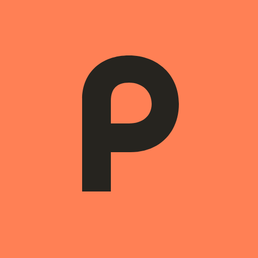

A small name. Room for a big life.A little tracking.
A little tracking.
A lot of living.
Your food journal, with a little personality. Built for everyday rituals, imperfect days, and making a little space for yourself.
Say it: POY-em · Find it: poiem.app01 / Signature
Friendly curves. A little spark.
{kind=link}
{kind=link}
Made to make room.
An open-counter “p”. Generous, geometric letters. One tilted dot. The mark stands on its own, from a tiny tab to the next thing Poiem becomes.
A brand, not a category.
Poiem is the name. Momo is the character. Food is our first chapter. No calorie symbols in the logo, no AI suffix needed.
02 / Color
Warm at heart. Bold by nature.
Paper#FFF8EB
Ink#26241F
Persimmon#FF8055
Citron#F4DF70
Leaf#BCDBB4
Iris#5458C9
Paper and ink lead. Persimmon makes the next action clear. Citron celebrates; leaf reassures; iris helps you find your way. Dark mode pairs warm cream with olive-charcoal.
03 / Personality
New name. Same tiny sidekick.
Meet MomoSmall dumpling.
Small dumpling.
Big personality.
Here for the little wins and the occasional terrible joke. Never here to judge your body, your plate, or your pace.
“I brought emotional support. And a very small calculator.”
04 / Takeaway
Ready for the real world.

Your pocket-sized Poiem.
Crisp at every size.
{kind=link}
{kind=link}
{kind=link}
{kind=link}